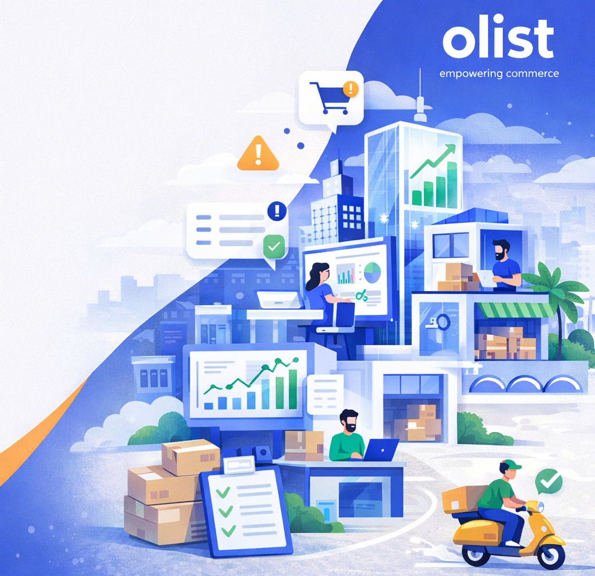
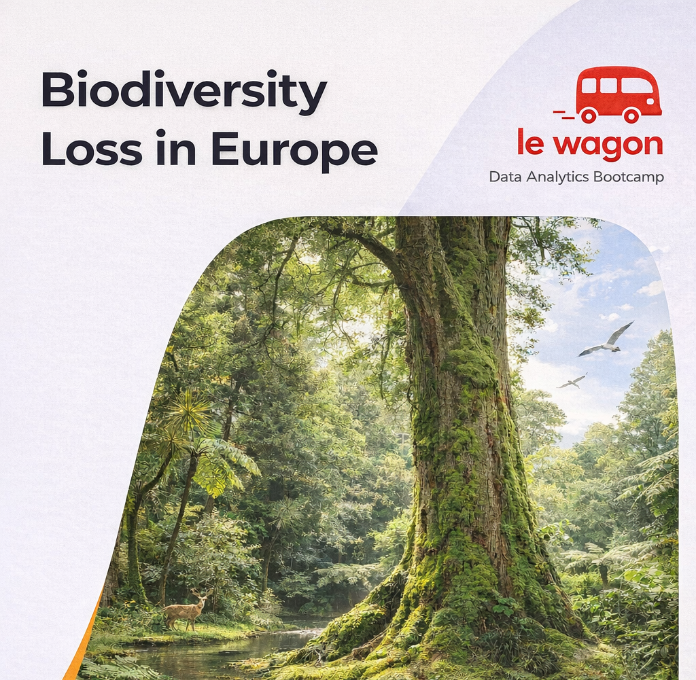

Personal Portfolio Website
March 2026
Developed and deployed a personal portfolio website using HTML, CSS and GitHub Pages.
Portugal Property Atlas
March 2026
A structured analysis of the Portuguese real estate market based on web-scraped property listings. The project applies a systematic, audit-style exploratory analysis to identify structural inconsistencies, near-duplicate records, and cross-field conflicts. Recognizing that property types follow distinct size and attribute conventions, the dataset was segmented and validated within each category. The result is a cleaned, internally consistent dataset suitable for downstream modeling and quantitative market analysis.
- Developed a structured deduplication strategy to resolve near-duplicate listings across multiple portals, preventing double-counting.
- Reconstructed reliable area metrics by resolving inconsistent reporting conventions within each property type.
- Designed rule-based validation checks to detect cross-field conflicts and quantify anomaly prevalence.
- Documented all transformation logic to ensure full reproducibility and modeling readiness.
Olist: Retention, Logistics & Risk
Dec 2025 – Jan 2026
A comprehensive operational analytics study of Brazil’s Olist marketplace, designed to diagnose the structural drivers of customer dissatisfaction, logistics failure, and seller performance risk. The project integrates SQL-based data engineering with R-driven statistical modeling, applying regression analysis, risk scoring, and route-level segmentation to uncover the independent effects of delivery delays, freight economics, and operational bottlenecks. The result is a decision-oriented analytical framework quantifying revenue at risk, identifying high-impact geographic corridors, and stratifying seller performance to support targeted operational interventions.
- Built end-to-end analytical datasets in BigQuery integrating transaction, delivery, and review data for multi-layer operational analysis.
- Validated multiple linear regression models to isolate the independent effects of delay severity, freight cost, and payment structure on review scores.
- Developed a composite seller risk scoring framework weighting lateness frequency, delay magnitude, and revenue impact.
- Conducted route-level origin–destination analysis to distinguish seller inefficiencies from systemic infrastructure constraints.
- Engineered custom diagnostic features (e.g., fulfillment stall indicators and bulk-size classification) to enhance model interpretability.
- Quantified “Revenue at Risk” to estimate financial exposure driven by dissatisfied customers and evaluate intervention ROI.
- Implemented interaction regression modeling to test seasonal moderation effects on delivery-related dissatisfaction.

Biodiversity Loss in Europe
Le Wagon Graduation Team Project
in collaboration with
Pascal Niessing
A structured environmental data analysis examining the relationship between land-use patterns, protected area coverage, and the Biodiversity Intactness Index across EU countries. The project integrates multi-source datasets and applies comparative analysis to identify cross-country structural patterns influencing biodiversity outcomes. Team-based project conducted as part of the Le Wagon Data Analytics Bootcamp graduation, with a focus on data integrity, analytical rigor, and clear communication of complex environmental insights.
- Developed dashboards and visual outputs to communicate environmental indicators clearly
- Constructed analytical datasets to evaluate associations between protected area coverage and biodiversity metrics
- Performed cross-country comparative analysis to identify structural land-use patterns
- Developed dashboards and visual outputs to communicate environmental indicators clearly

Skills

 BigQuery
BigQuery
- CTEs, window functions, cohort tables
- Validation rules, dedup logic
- Performance-minded querying

- pandas, numpy, modin
- matplotlib, plotly, seaborn
- scikit-learn, prophet
- beautifulsoup

- tidyverse (dplyr, tidyr, readr)
- ggplot2, ggrepel, scales
- lubridate, broom, car
- knitr, rmarkdown, DT, kableExtra
- bigrquery, DBI

 Power BI
Power BI
 BigQuery
BigQuery

- Git, GitHub, Git Bash
- VSCode, RStudio
- Jupyter, Colab, Kaggle
- Markdown, documentation

 Google Tag Manager
Google Tag Manager
 APIs (basic integration)
APIs (basic integration)
 HTML5 (semantic)
HTML5 (semantic)
 GitHub Pages
GitHub Pages
Work Experience
on-site
- Oversaw laboratory quality assurance, workflow optimization, and compliance across all operations.
- Developed and implemented SOPs; managed equipment and suppliers; ensured strict adherence to safety protocols.
- Coordinated biological sample logistics and laboratory operations for a colorectal cancer clinical study, contributing to the design and implementation of end-to-end operational, logistical, and IT-platform workflows.
- Conducted diagnostic testing and analysis, delivering clear, reliable, and actionable results.
- Introduced new methodologies, improved process efficiency, and trained incoming team members.
on-site
- Managed planning, coordination, and execution of 200K+ COVID-19 diagnostic tests under enhanced BSL-II conditions, ensuring strict adherence to safety protocols.
- Performed qPCR result analysis and prepared detailed reports for patients and public health entities (~10K SINAVE reports).
- Directed sample prioritization and patient coordination, optimizing laboratory workflow and turnaround times.
- Developed and implemented SOPs; managed equipment and suppliers; ensured safety protocol adherence.
on-site
- Oversaw lab management and operations, including equipment maintenance, inventory control, and staff coordination
- Conducted scientific projects, provided experimental support
on-site
- Worked on projects focused on identifying and characterizing long noncoding RNAs in mouse stem cells and heart tissue, with emphasis on histone H3–bound lncRNAs, positional conservation, and tissue-specific expression and function
- Co-authored 7 peer-reviewed publications in international journals (2014–2018), advancing research in long non-coding RNAs and their role in cardiovascular biology, angiogenesis, and myogenesis
on-site
- Conducted research on lncRNAs in embryonic stem cells, performing global transcriptome analysis during cardiac differentiation
- Co-authored a peer-reviewed publication in Nucleic Acids Research (2012) on the development of “Noncoder,” a web interface for exon array–based detection of long non-coding RNAs
on-site
- Recombinant viral hepatitis vaccine development
Education
Honors & Awards
Excellence in Learning
Awarded a silver medal for academic excellence (overall GPA 5.0 / 5.0).
Future Leaders Exchange (FLEX) Scholarship Program
Finalist of the 2004 FLEX Scholarship Program. Lake Gibson High School, Lakeland, FL, USA — Certificate of Academic Excellence.
Short-term Scientific Research Grant
Awarded a short-term research grant supporting collaboration between Kazan Federal University (Russia) and Justus-Liebig-Universität Gießen (Germany). Internship carried out at the Laboratory of Dr. Christoph Lämmler.
Scientific Publications
A non-genetic model of vascular shunts informs on the cellular mechanisms of formation and resolution of arteriovenous malformations
Competition for endothelial cell polarity drives vascular morphogenesis in the mouse retina
Endothelial cell invasion is controlled by dactylopodia
Endothelial cell invasiveness is controlled by myosin IIA-dependent inhibition of Arp2/3 activity
A systems immunology approach identifies the collective impact of 5 miRs in Th2 inflammation
A novel long non-coding RNA Myolinc regulates myogenesis through TDP-43 and Filip1
Airn regulates Igf2bp2 translation in cardiomyocytes
Long Noncoding RNA MANTIS Facilitates Endothelial Angiogenic Function
Logic programming to infer complex RNA expression patterns from RNA-seq data
Epigenetic Regulation of Angiogenesis by JARID1B-Induced Repression of HOXA5
Long noncoding RNA MALAT1 regulates endothelial cell function and vessel growth
Bacillus pumilus strains with inactivated genes of extracellular serine proteinases
Noncoder: a web interface for exon array-based detection of long non-coding RNAs
Let’s Connect
If you're hiring for Junior Data Analyst, BI, Data Engineer, or Data Scientist roles, I’d be happy to connect. I’m especially interested in opportunities that combine thoughtful data cleaning, meaningful KPI design, and analytical problem-solving with real-world impact.
If you have questions about my projects, ideas for improvement, or just want to talk about data, research, or career paths in analytics, I'd be happy to chat. I genuinely enjoy exchanging ideas and building meaningful professional connections.